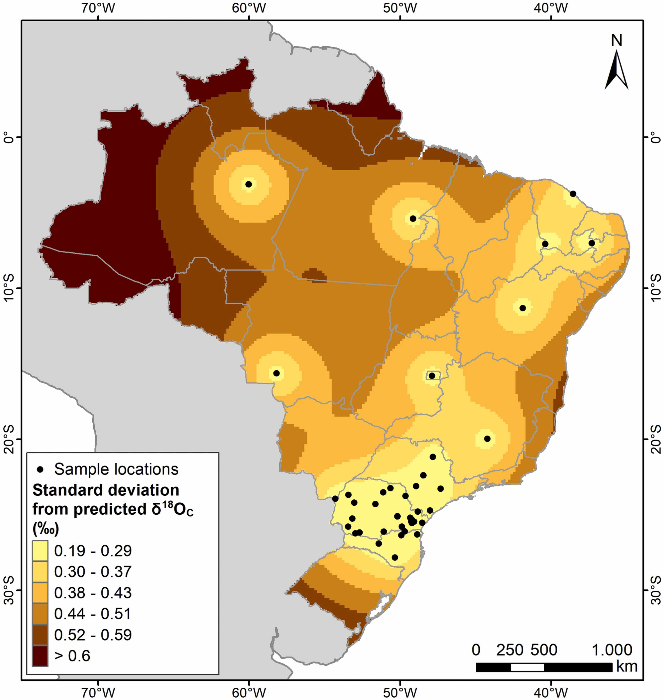

Building an isoscape based on tooh enamel for human provenance estimation in Brazil

Resumo em Português
Neste estudo, apresentamos uma correlação entre os valores de δ¹⁸OC do carbonato em amostras de esmalte dentário da população brasileira moderna e os dados disponíveis de δ¹⁸ODW para a água meteórica da Rede Global de Isótopos em Precipitação (GNIP). O esmalte dentário de 119 indivíduos brasileiros de cinco regiões diferentes do país foi analisado. O isoscapo de δ¹⁸OC obtido apresenta boa concordância com o isoscapo baseado em águas meteóricas e de consumo regionais. A matriz de regressão obtida para os valores de δ¹⁸O do carbonato do esmalte dentário e da água meteórica foi utilizada para construir um isoscapo por meio da abordagem de krigagem por regressão.Os dados mostram que o Brasil pode ser dividido em duas regiões principais em relação aos valores de δ¹⁸O do carbonato do esmalte dentário: (1) a parte mais oriental da região Nordeste, caracterizada por clima quente e seco; e (2) o restante do país, estendendo-se desde a floresta amazônica até as regiões mais meridionais. Os dados aqui reportados podem ser utilizados para fins forenses relacionados à identificação humana.